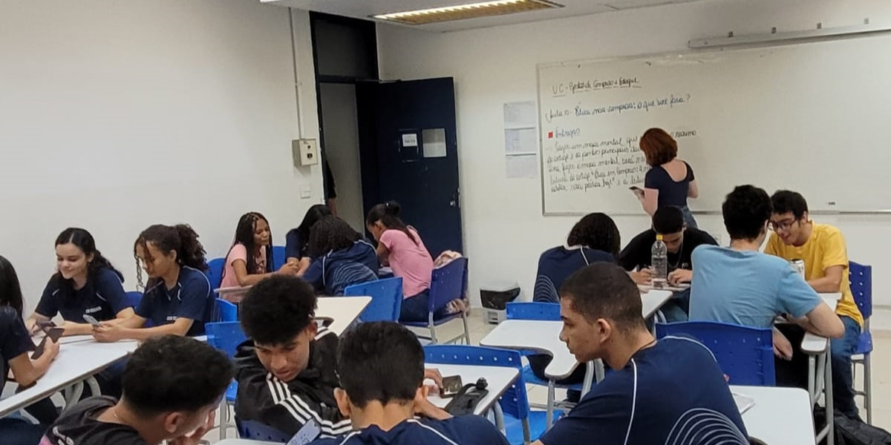
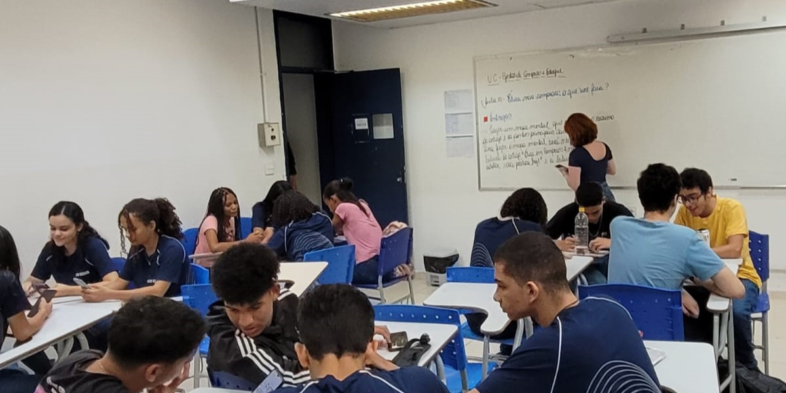

Elétrica
O curso de elétrica do SENAI é uma excelente opção para quem deseja se capacitar e ingressar no mercado de trabalho na área elétrica. Com uma carga horária abrangente e conteúdos atualizados, o curso proporciona aos alunos conhecimentos teóricos e práticos essenciais para atuarem como eletricistas qualificados.
Durante o curso, os alunos têm a oportunidade de aprender sobre os princípios básicos da eletricidade, como circuitos elétricos, leitura e interpretação de diagramas, instalações elétricas residenciais e industriais, além de conhecerem as normas técnicas e de segurança que regem a profissão.
Uma das vantagens do curso de elétrica do SENAI é a sua estrutura curricular, que contempla tanto a parte teórica quanto a prática. Os alunos têm acesso a laboratórios equipados com materiais e equipamentos utilizados no dia a dia da profissão, o que possibilita a realização de atividades práticas que simulam situações reais de trabalho.
Além disso, o SENAI conta com instrutores altamente qualificados, com vasta experiência no mercado elétrico. Eles estão preparados para transmitir o conhecimento de forma clara e objetiva, tirando dúvidas e auxiliando os alunos em seu processo de aprendizagem.
Ao concluir o curso de elétrica do SENAI, os alunos estarão aptos a realizar instalações elétricas seguras e eficientes, identificar e solucionar problemas elétricos, além de estarem preparados para trabalhar em equipes multidisciplinares.
O mercado de trabalho para os profissionais da área elétrica é amplo e promissor. Com a constante demanda por serviços de instalação e manutenção elétrica, há diversas oportunidades de emprego em empresas de diferentes segmentos, como construção civil, indústria, comércio e prestação de serviços.
Além disso, o curso de elétrica do SENAI também prepara os alunos para empreenderem e abrirem seus próprios negócios na área elétrica. Com conhecimentos técnicos sólidos e habilidades adquiridas ao longo do curso, os alunos têm a possibilidade de atuar como autônomos, oferecendo serviços de qualidade e conquistando sua independência financeira.
Portanto, se você tem interesse em ingressar no mercado de trabalho como eletricista ou deseja aprimorar seus conhecimentos na área elétrica, o curso de elétrica do SENAI é uma escolha certeira. Com uma formação completa e reconhecida pelo mercado, você estará preparado para enfrentar os desafios da profissão e se destacar em um mercado competitivo. Invista em seu futuro e faça parte dessa qualificação de excelência oferecida pelo SENAI.


Tecnologia da informação
O curso de Tecnologia da Informação (TI) do SENAI é uma excelente oportunidade para aqueles que desejam se capacitar e ingressar em um dos setores mais promissores do mercado de trabalho. Com uma abordagem abrangente, o curso oferece aos alunos conhecimentos teóricos e práticos essenciais para atuarem como profissionais qualificados na área de TI.
Durante o curso, os alunos têm a oportunidade de aprender sobre os fundamentos da tecnologia da informação, como programação, banco de dados, redes de computadores, segurança da informação, desenvolvimento web e mobile, entre outros. Além disso, também são abordados temas como análise e solução de problemas, gestão de projetos e empreendedorismo.
Uma das grandes vantagens do curso de TI do SENAI é a sua estrutura curricular atualizada e alinhada com as demandas do mercado. Os alunos têm acesso a laboratórios equipados com tecnologia de ponta, onde podem colocar em prática os conhecimentos adquiridos em sala de aula. Essa abordagem prática permite que os alunos desenvolvam suas habilidades técnicas e estejam preparados para os desafios reais do mercado de trabalho.
Além disso, o SENAI conta com professores altamente capacitados e experientes na área de TI. Eles estão sempre atualizados com as tendências e inovações tecnológicas, proporcionando aos alunos um ensino de qualidade e alinhado com as demandas atuais do mercado.
Ao concluir o curso de TI do SENAI, os alunos estarão aptos a atuar em diversas áreas dentro da tecnologia da informação. Eles poderão trabalhar como programadores, analistas de sistemas, administradores de redes, desenvolvedores web e mobile, entre outras possibilidades. O mercado de trabalho para profissionais de TI é vasto e oferece ótimas oportunidades de crescimento e desenvolvimento profissional.
Além disso, o curso de TI do SENAI também estimula o empreendedorismo e a criação de novos negócios na área de tecnologia. Os alunos são incentivados a desenvolverem projetos inovadores e a pensar de forma empreendedora, preparando-os para atuarem como autônomos ou até mesmo para abrir suas próprias empresas.
A tecnologia da informação está presente em praticamente todos os setores da economia, seja na indústria, comércio, serviços ou governo. Portanto, investir em uma formação sólida na área de TI é garantia de boas oportunidades profissionais e um futuro promissor.
Se você tem interesse em seguir carreira na área de TI ou deseja aprimorar seus conhecimentos nesse setor em constante evolução, o curso de TI do SENAI é a escolha certa. Com uma formação completa e reconhecida pelo mercado, você estará preparado para enfrentar os desafios da profissão e se destacar em um mercado altamente competitivo. Invista em seu futuro e faça parte dessa qualificação de excelência oferecida pelo SENAI.


Logística
O curso de Logística do Senai é uma excelente opção para aqueles que desejam se capacitar e ingressar em um dos setores mais importantes e estratégicos da economia. Com uma abordagem abrangente, o curso oferece aos alunos conhecimentos teóricos e práticos essenciais para atuarem como profissionais qualificados na área de logística.
Durante o curso, os alunos têm a oportunidade de aprender sobre os fundamentos da logística, como gestão de estoques, armazenagem, transporte, distribuição, compras e suprimentos, além de temas como cadeia de suprimentos, logística reversa e sustentabilidade. O objetivo do curso é capacitar os alunos a planejar, implementar e controlar as atividades logísticas de forma eficiente e eficaz.
Uma das grandes vantagens do curso de Logística do Senai é a sua estrutura curricular atualizada e alinhada com as demandas do mercado. Os alunos têm acesso a laboratórios equipados com tecnologia de ponta, onde podem colocar em prática os c onhecimentos adquiridos em sala de aula. Essa abordagem prática permite que os alunos desenvolvam suas habilidades técnicas e estejam preparados para os desafios reais do mercado de trabalho.
Além disso, o Senai conta com professores altamente capacitados e experientes na área de logística. Eles estão sempre atualizados com as tendências e inovações do setor, proporcionando aos alunos um ensino de qualidade e alinhado com as demandas atuais do mercado.
Ao concluir o curso de Logística do Senai, os alunos estarão aptos a atuar em diversas áreas dentro da cadeia logística. Eles poderão trabalhar como analistas de logística, supervisores de estoque, coordenadores de transporte, gerentes de operações logísticas, entre outras possibilidades. O mercado de trabalho para profissionais de logística é amplo e oferece ótimas oportunidades de crescimento e desenvolvimento profissional.
Além disso, o curso de Logística do Senai também estimula o empreendedorismo e a criação de novos negócios na área. Os alunos são incentivados a desenvolverem projetos inovadores e a pensar de forma estratégica, preparando-os para atuarem como autônomos ou até mesmo para abrir suas próprias empresas na área de logística.
A logística é um setor fundamental para o funcionamento eficiente das empresas e da economia como um todo. Ela está presente em todos os segmentos, desde indústrias até o comércio e serviços. Portanto, investir em uma formação sólida na área de logística é garantia de boas oportunidades profissionais e um futuro promissor.
Se você tem interesse em seguir carreira na área de logística ou deseja aprimorar seus conhecimentos nesse setor em constante crescimento, o curso de Logística do Senai é a escolha certa. Com uma formação completa e reconhecida pelo mercado, você estará preparado para enfrentar os desafios da profissão e se destacar em um mercado altamente competitivo. Invista em seu futuro e faça parte dessa qualificação de excelência oferecida pelo Senai.
 

Mecânica
O curso de Mecânica do Senai é uma excelente oportunidade para quem deseja se especializar em uma das áreas mais fundamentais e procuradas no setor industrial. Com um currículo abrangente e atualizado, o curso oferece aos alunos conhecimentos teóricos e práticos essenciais para se tornarem profissionais qualificados e preparados para os desafios do mercado de trabalho.
Durante o curso, os alunos têm a oportunidade de aprender sobre os princípios básicos da mecânica, como termodinâmica, mecânica dos fluidos, resistência dos materiais e eletricidade aplicada. Além disso, são abordados temas mais específicos, como manutenção industrial, automação, pneumática, hidráulica e sistemas de controle. O objetivo é capacitar os alunos a diagnosticar problemas mecânicos, realizar reparos e manutenção preventiva em máquinas e equipamentos industriais.
Uma das grandes vantagens do curso de Mecânica do Senai é a sua abordagem prática. Os alunos têm acesso a laboratórios equipados com tecnologia de ponta, onde podem vivenciar na prática os conhecimentos adquiridos em sala de aula. Essa experiência prática é fundamental para o desenvolvimento das habilidades técnicas dos alunos e para sua preparação para os desafios reais da indústria.
Além disso, o Senai conta com uma equipe de professores altamente capacitados e experientes na área da mecânica. Eles estão sempre atualizados com as novas tecnologias e tendências do setor, proporcionando aos alunos um ensino de qualidade e alinhado com as demandas do mercado de trabalho.
Ao concluir o curso de Mecânica do Senai, os alunos estarão preparados para atuar em diversas áreas da indústria, como manutenção industrial, automobilística, metalúrgica, petroquímica, entre outras. Eles poderão trabalhar como mecânicos de manutenção, técnicos de automação industrial, operadores de máquinas e equipamentos, entre outras possibilidades. O mercado de trabalho para profissionais da área de mecânica é amplo e oferece ótimas oportunidades de crescimento e desenvolvimento profissional.
Além disso, o curso de Mecânica do Senai também estimula o empreendedorismo e a criação de novos negócios na área. Os alunos são incentivados a desenvolverem projetos inovadores e a pensar de forma estratégica, preparando-os para atuarem como autônomos ou até mesmo para abrir suas próprias empresas no setor da mecânica.
A mecânica é uma área fundamental para a indústria e desempenha um papel crucial no funcionamento de máquinas e equipamentos. Profissionais qualificados em mecânica são indispensáveis para garantir a eficiência e a produtividade das empresas. Portanto, investir em uma formação sólida na área de mecânica é garantia de boas oportunidades profissionais e um futuro promissor.
Se você tem interesse em seguir carreira na área de mecânica ou deseja aprimorar seus conhecimentos nesse setor em constante crescimento, o curso de Mecânica do Senai é a escolha certa. Com uma formação completa e reconhecida pelo mercado, você estará preparado para enfrentar os desafios da profissão e se destacar em um mercado altamente competitivo. Invista em seu futuro e faça parte dessa qualificação de excelência oferecida pelo Senai.


Segurança do trabalho
O curso de Segurança do Trabalho do Senai é uma excelente opção para aqueles que desejam se especializar em uma área de extrema importância e demanda crescente no mercado de trabalho. Com um currículo abrangente e atualizado, o curso oferece aos alunos conhecimentos teóricos e práticos essenciais para se tornarem profissionais qualificados e preparados para lidar com os desafios da segurança ocupacional.
Durante o curso, os alunos têm a oportunidade de aprender sobre as principais normas regulamentadoras relacionadas à segurança do trabalho, como a NR-5 (Comissão Interna de Prevenção de Acidentes - CIPA), NR-6 (Equipamentos de Proteção Individual - EPI) e NR-9 (Programa de Prevenção de Riscos Ambientais - PPRA). Além disso, são abordados temas como prevenção de acidentes, ergonomia, higiene ocupacional, proteção contra incêndios e primeiros socorros.
Uma das grandes vantagens do curso de Segurança do Trabalho do Senai é a sua abordagem prática. Os alunos têm acesso a laboratórios equipados com simulações e cenários reais, onde podem vivenciar na prática os conhecimentos adquiridos em sala de aula. Essa experiência prática é fundamental para o desenvolvimento das habilidades técnicas dos alunos e para sua preparação para enfrentar situações reais de risco no ambiente de trabalho.
Além disso, o Senai conta com uma equipe de professores altamente capacitados e experientes na área de segurança do trabalho. Eles estão sempre atualizados com as novas legislações e tendências do setor, proporcionando aos alunos um ensino de qualidade e alinhado com as demandas do mercado de trabalho.
Ao concluir o curso de Segurança do Trabalho do Senai, os alunos estarão preparados para atuar em empresas de diversos setores, como indústria, construção civil, saúde, transporte, entre outros. Eles poderão trabalhar como técnicos em segurança do trabalho, analistas de segurança ocupacional, supervisores de segurança e saúde no trabalho, entre outras possibilidades. O mercado de trabalho para profissionais da área de segurança do trabalho é amplo e oferece ótimas oportunidades de crescimento e desenvolvimento profissional.
Além disso, o curso de Segurança do Trabalho do Senai também estimula o empreendedorismo e a criação de novos negócios na área. Os alunos são incentivados a desenvolverem projetos inovadores e a pensar de forma estratégica, preparando-os para atuarem como consultores independentes ou até mesmo para abrir suas próprias empresas na área de segurança ocupacional.
A segurança do trabalho é um aspecto fundamental para qualquer empresa que se preocupa com o bem-estar e a integridade física de seus colaboradores. Profissionais qualificados em segurança do trabalho são indispensáveis para garantir um ambiente saudável e seguro no local de trabalho, prevenindo acidentes e doenças ocupacionais. Portanto, investir em uma formação sólida na área de segurança do trabalho é garantia de boas oportunidades profissionais e um futuro promissor.
Se você tem interesse em seguir carreira na área de segurança do trabalho ou deseja aprimorar seus conhecimentos nesse setor em constante crescimento, o curso de Segurança do Trabalho do Senai é a escolha certa. Com uma formação completa e reconhecida pelo mercado, você estará preparado para enfrentar os desafios da profissão e se destacar em um mercado altamente competitivo. Invista em seu futuro e faça parte dessa qualificação de excelência oferecida pelo Senai.


Contato
Telefone & Whatsapp: (21) 99999-5555
E-mail: suporte@senai.com
Endereço: Av Ayrton Senna, 3000 - Barra da Tijuca - Rio de Janeiro
© SENAI - Todos os direitos reservados